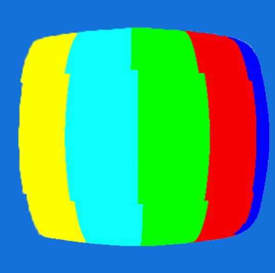

 Rasterizer - C++ implemented image rasterizer – performs supersampling, hierarchical transforms, and texture mapping with antialiasing on SVG files and converts to 2D image.
 MeshEdit - C++ implemented 3D model mesh application; load and edit basic COLLADA
mesh files (used by many major modeling packages and real time graphics engines).
MeshEdit - C++ implemented 3D model mesh application; load and edit basic COLLADA
mesh files (used by many major modeling packages and real time graphics engines).
 PathTracer - C++ implemented, based on Physically Based Rendering (Pharr &
Humphries)
PathTracer - C++ implemented, based on Physically Based Rendering (Pharr &
Humphries)
Here are some notes I have done for UC Berkeley's CS184 Computer Graphics and Imaging course. (I am currently typing up some of the notes.)
Sweet Victory (2016) My first 3D animated short! My notable contribution to this masterpiece is Marshmallow (or as like my mom refers to it, "El Bombon"), which I modeled and animated. Walden (2016) The piece was my group's submission for Cal State Long Beach's 24 Hours Challenge; as the name implies this was made in under 24 hours. The prompt was "make a 1 minute short that contains a physical or metaphorical wall".
The Only Love a Mans Ever Known (exp. 2017)
This project was made for UC Berkeley Advanced Digital
Animation course, CNM190. In essence, its a short about the pangs of alcoholism, but that is all I can say for
now. I worked on audio, lighting, modeling, and post-production for this short. It has won an award at the East
LA film festival, and is being considered for other film festivals!